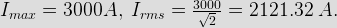

- The conduction loss verses device electric current characteristics of power MOSFET in best approximately by
I = Device current, Ron = on state resistance of power MOSFET, hence conduction loss P = I2Ron. Therefore conduction loss verses device electric current characteristics can be approximately parabola.
- A 3 - phase diode bridge rectifier is fed from a 400 V rms, 50 Hz, 3 phase AC source. If the load is purely resistive, then peak instantaneous output voltage is equal to
As the load is resistive the peak instantaneous output voltage Vm = 400√2 V.
- An SCR is considered to be a semi controlled device because
- Dual slope ADC has R = 1 KΩ and C = 0.22 nanofarad has charging and discharge times for some voltage is 9 ns & 3 ns respectively. The reference Voltage is 2.2 V. What is the peak voltage reached by triangular wave during charging?

- An SCR has half cycle surge electric current rating of 3000 A for 50 Hz supply. One cycle surge electric current will be

- The typical value of SCR for modern alternator is
Always the typical value of SCR for modern alternator is 0.5.
- A zener diode voltage regulator has load requirement of 12 V and 2 Amp. The zener diode's minimum electric current requirement is 0.2 A. The minimum voltage at input is 24 V. What is maximum efficiency of circuit?
η = ( 2 × 12) / ( 2.2 × 24 ) × 100 % = 24 / 52.8 = 45.5 %.
- In n type semiconductor elements of which group of periodic table is added as dopant
With group 5 elements like phosphorous, arsenic, antimony are added to Ge or Si crystal which produces free electrons.
- Darlington connection is achieved in 2 transistors by connecting
In darlington connection 2 transistor's collectors are connected and emitter of 1st transistor to the base of 2nd is also connected. This provides a three terminal device that in actual operation can be regarded as 2 cascaded emitter followers.
- FM stands for
In telecommunications and signal processing, frequency modulation (FM) conveys information over a carrier wave by varying its instantaneous frequency. This contrasts with amplitude modulation, in which the amplitude of the carrier is varied while its frequency remains constant.
- An opamp comparator circuit employs
Comparator is a device used for comparison of 2 voltage levels. Output indicates which of the 2 voltages is greater. No feedback is used.
- A single phase full wave midpoint thyristor uses a 230 / 200 V transformer with central tap on the secondary side. The PIV per thyristor is
PIV = √(2) × Vm = √(2) × 200 = 282.84 V.
- In a rectifier circuit, the diode converts
Diode converts alternatring voltage to unidirectional electric current which is then converted in to voltage by load resistance connected across the output node.
- A single phase one pulse controlled circuit has a resistance and counter emf load 400sin(314t) as the source voltage for a load counter emf of 200 V, the range of firing angle control is
400sinθ = 200 ⇒ θ = 30°.
So control range is θ to( π - θ ) i.e. 30° to 150°. - A single phase full bridge inverter can operated in load commutation mode in case load consist of
In this case reading electric current will flow in circuit & it will became zero so thyristor will be load commutated.
- A step up chopper has input voltage 110 V and output voltage 150 V. The value of duty cycle is
Under construction.
- A schottky diode is a
Design with  by SARU TECH
by SARU TECH
www.sarutech.com
Content Credited to electrical4u.com
Online Electrical Engineering Study Site